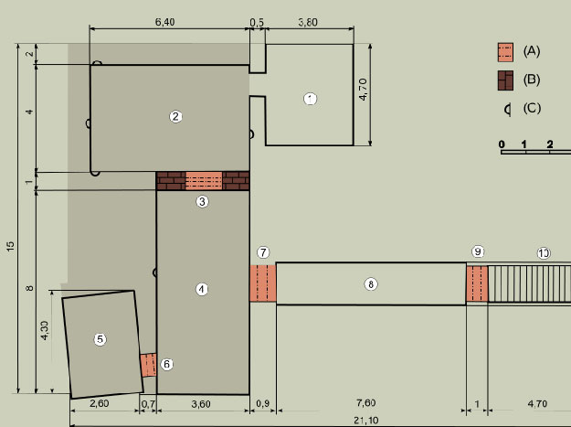

Firefox OS workshop
Setting up the environment
Development workflow
Introduction to JS
How does the browser work?
Events
Testing
Performance tips
Building blocks & UI

Layout
Animation in the web
FirefoxOS specifics
Good practices
@michalbe
@rik24d